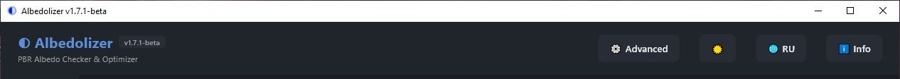
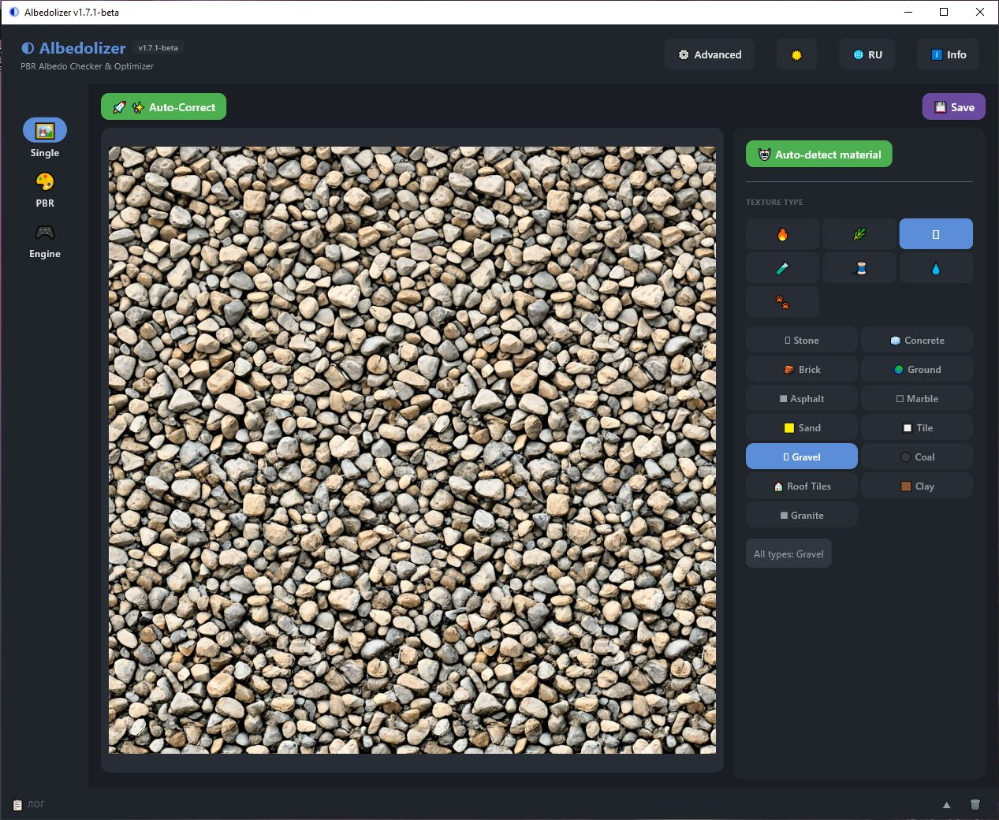
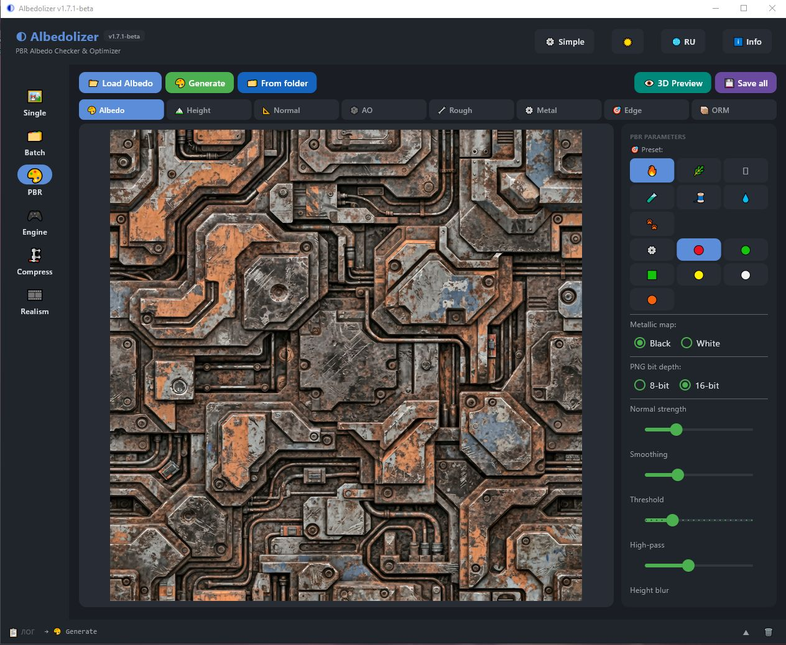
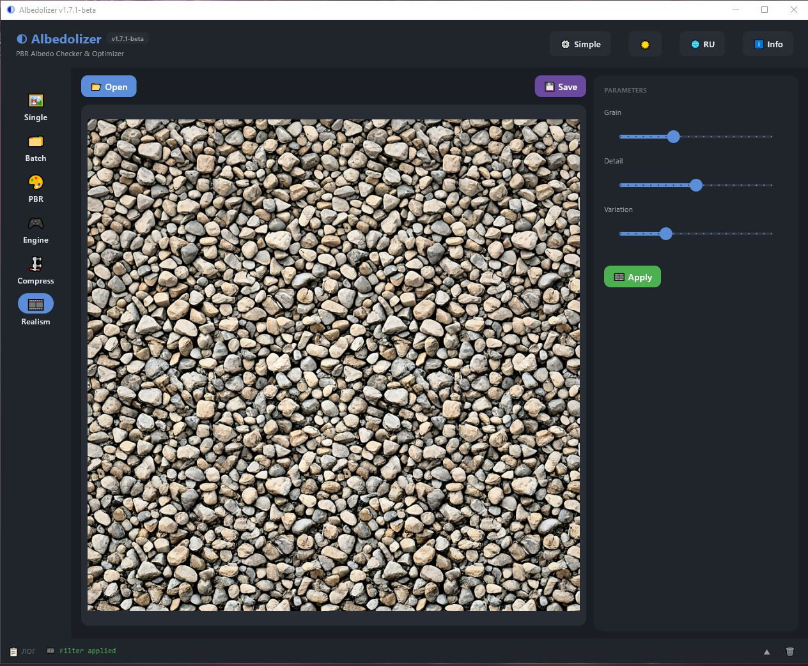
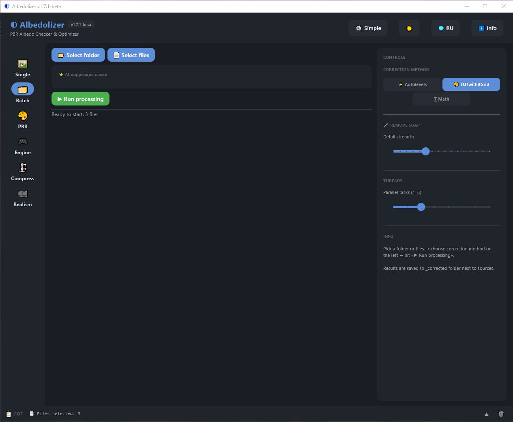

◐ Albedolizer v1.7.1-beta
PBR Albedo Checker & Optimizer — User Manual
1. Introduction
Albedolizer is a standalone Windows tool for 3D artists, game designers, and anyone working with PBR textures. It checks Albedo maps against standards, automatically corrects color via AI, generates a full set of PBR maps, packs them for your target engine, and lets you preview the result in a built-in 3D viewer.
Two UI modes
- Simple — one-click workflow (Open → AI correct → Save). Advanced tools are hidden.
- Advanced — full control. Unlocks statistics, correction methods, soap removal, saturation, tiling, seamless, and more.
Switch modes via the ⚙ Simple / ⚙ Advanced button in the header.
2. Header & Navigation
The header contains the app title, current version, UI mode toggle, theme switcher, language switcher, and the Info button.

The NavigationRail on the left gives access to all tabs:
- Single — check & correct one texture
- Batch — process a whole folder
- PBR — generate PBR maps
- Engine — pack maps for Unity / Unreal / Godot
- Compress — reduce file size
- Realism — apply procedural photorealism filter
3. Single tab
Simple mode
In Simple mode, one button does everything: 🚀 Process texture. It opens a file, runs AI color correction, boosts saturation, and shows the result.

Advanced mode
In Advanced mode you get full control:
- Pick a texture type on the right (or click 🤖 Auto-detect material)
📂 Open— load an Albedo texture🔍 Check— see stats and heatmap- If FAIL →
✨ Auto-Correct 💾 Savethe result

↺ Reset to compare the corrected image with the original at any time.4. Single right panel
The right panel of the Single tab contains everything you need to configure the correction:
- Auto-detect material — CLIP-based classifier picks the best preset from 47 options
- Texture type — categories (🔥 Metal, 🌿 Nature, 🪨 Mineral, 🧪 Synthetic, 🧵 Fabric, 💧 Special, 🐾 Fauna) and presets inside each
- Correction method — Autolevels / LUTwithBGrid / Math
- Tiling 3×3 — spot seams on tileable textures
- Seamless — make a texture tileable with radial mask + scatter
- Remove soap — adaptive unsharp mask for blurry patches
- Saturation — fix washed-out colors after AI correction
- Statistics — min / max / avg / median / percentiles

5. PBR tab
Generate a full set of PBR maps from a single Albedo texture.
📂 Load Albedo— pick a texture- Pick a preset on the right (sliders auto-tune)
- Adjust sliders if needed (Normal strength, Smoothing, Threshold, High-pass, Height blur, AO radius, AO intensity, Rough base, Rough variation)
🎨 Generate→ 7 maps- Switch between maps with the buttons on top: Albedo / Height / Normal / AO / Rough / Metal / Edge / ORM
👁 3D Preview— open the OpenGL viewer💾 Save all— creates a<name>_pbr/folder next to the source

6. Engine Export
Pack your PBR maps for a specific engine in one click.
Source
⚙️ From current PBR— use the maps you just generated in the PBR tab📂 Load from folder— pick a folder with existing*_albedo.png,*_normal.png,*_ao.png, etc.
Supported engines
| Engine | Layout |
|---|---|
| Unity HDRP | R = Metallic, G = AO, B = Detail Mask, A = Smoothness (1 − Roughness) |
| Unity URP | R = Metallic, G = 0, B = 0, A = Smoothness (1 − Roughness) |
| Unreal | R = AO, G = Roughness, B = Metallic |
| Godot | R = AO, G = Roughness, B = Metallic |
Additional options
- Normal map format — OpenGL (Y+) or DirectX (Y−) with green channel flipped
- Detail Mask (HDRP only) — white (1.0) / edge map / custom loaded from disk
- PNG bit depth — 8-bit or 16-bit
- Channel preview — R / G / B / A / RGB / RGBA

Click ⚙️ Pack to generate the packed map, then 💾 Save all to write <name>_<engine>_<gl|dx>/ next to the source.
7. Realism filter
Add a procedural photorealism effect to Albedo textures — grain, micro-detail, color variation, and a subtle vignette.
📂 Open— load a texture- Tune three sliders:
- Grain — fine and coarse noise layers
- Detail — adaptive high-pass overlay for micro-detail
- Variation — large-scale color/brightness patches + vignette
🎞 Apply— see the result in the preview💾 Savethe result

8. Batch processing
Process a whole folder of textures at once with AI correction or compression.
📁 Select folderor📄 Select files- Choose correction method (Autolevels / LUTwithBGrid / Math) on the right
- Set threads count (1–8 parallel tasks)
- Optionally tune Remove soap strength
▶ Run processing

Results are saved to a _corrected folder next to the sources.
9. Compression
Reduce file size of Albedo textures without losing visual quality.
- Single compression —
📂 Opena file, click🗜 Compress, then💾 Save - Batch compression —
📁 Select folderor📄 Select files, then▶ Compress folder
Choose 8-bit or 16-bit PNG on the right panel.

Results go to a _compressed folder next to the sources.
10. Log panel
At the bottom of the window there is a single shared log panel. When collapsed, it shows only the last line. Click the header to expand it and see the full history.

- Click the log header to toggle collapsed / expanded
- Click
🗑to clear the log
11. 3D Viewer
Preview your PBR result on a sphere in real time, with HDRI lighting and blurred reflections.
Controls
- Left mouse button — rotate the sphere
- Mouse wheel — zoom in / out
- Tiling panel — click X / Y buttons to change texture scale from 1×1 to 16×16
- Reset 4x3 — restore the default tiling

viewer.exe) when you click 👁 3D Preview in the PBR tab.12. Info dialog
Click ℹ Info in the header to open the info dialog. It contains:
- 📖 Help — quick reference in plain text
- ℹ About — version, build date, author
- 💛 Support — donation wallets (BTC, USDT, GRAM)
- 📖 Manual — this HTML file, opens in your browser
13. License & credits
License
Albedolizer is released under the MIT License — free to use, including in commercial projects.
Credits
- LUTwithBGrid (ECCV 2024) — Wontae Kim, Nam Ik Cho — Apache 2.0
- OpenAI CLIP (ViT-B/32) — for material auto-detection
- Flet — cross-platform UI framework
- Moderngl + GLFW + imgui-bundle — 3D viewer stack
Source code
github.com/invisiblelevel/Albedolizer
Made by INV.LVL · 2026